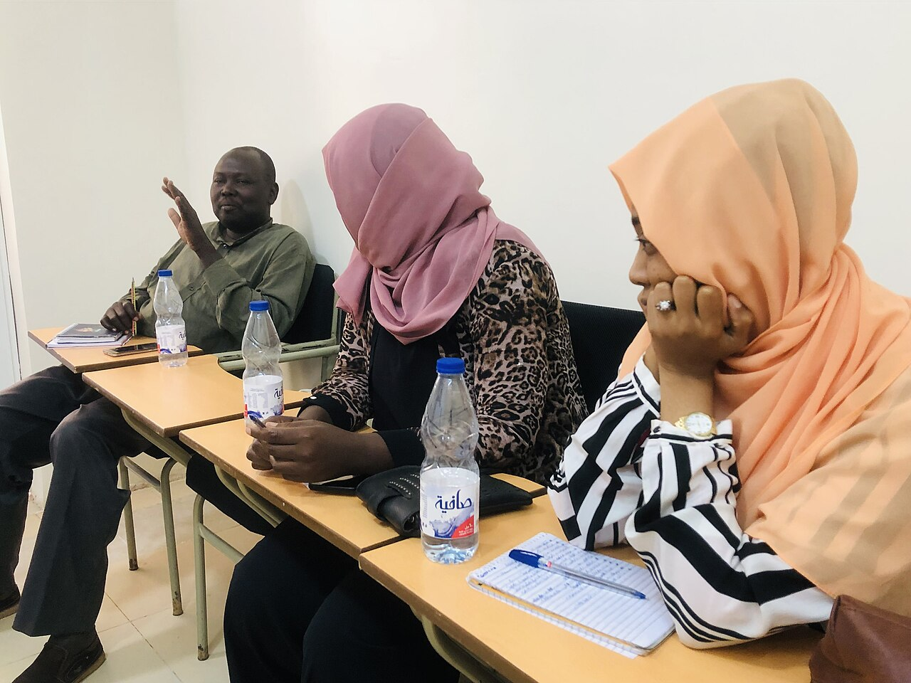

Service area
Long Beach-centered
KinderHeart is based in Long Beach, California and is intended to support families in the surrounding community.
About KinderHeart
KinderHeart was shaped around the idea that immigrants and underserved families should not be left alone to navigate housing instability, public systems, legal uncertainty, and urgent household crises without trusted support.

Mission
KinderHeart supports immigrants and underserved individuals in Long Beach and surrounding areas by helping them access housing assistance, legal support referrals, public benefits, and emergency aid through multilingual, culturally responsive service.
Vision
To create a supportive and inclusive community where individuals of all backgrounds—especially immigrants and underserved families—can access housing, public assistance, legal support, and emergency resources without barriers.
Why this matters
Many families face multiple challenges at once: unstable housing, limited income, difficulty accessing benefits, language barriers, immigration-related fear, and a lack of trusted referral pathways. KinderHeart’s model is designed to meet people where they are and connect them to practical next steps.
Service area
KinderHeart is based in Long Beach, California and is intended to support families in the surrounding community.
Language access
Services are designed to be available in English, Khmer, and Spanish to reduce communication barriers.
Program posture
The program model is structured to support referrals, outreach, intake, tracking, and stronger funder communication.